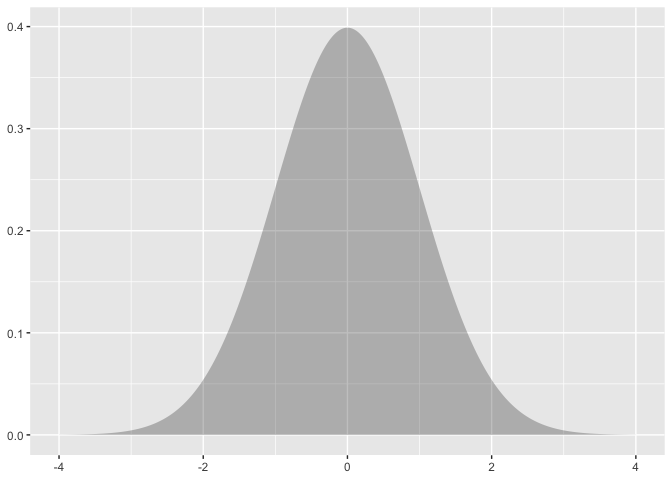

ma206distributions
The ma206distributions package allows you to easily visualize common distributions for statistical and probabilistic analytics in ggplot2. This package has been built along side its sister package ma206equations. Both packages will be discussed here, but the source code for ma206equations resides here. See also ma206data here.
Note to the reader
Your feedback is on this work is greatly appreciated.
Beyond the descriptions of our work, we interject comments on our hesitations 🤔 and areas that need some work 🚧, for your consideration marked with emoji.
Abstract
Mathematical fluency involves frequent use of probability distributions and of course equations. However, visualizing these distributions with software and typing equations can be tedious. In a well-defined statistics and probability curriculum, the set of distributions and equations to be mastered is known and limited. The goal of this project is to provide ready-to-use functions that will make it easier to engage computationally with these distributions and equations.
Objective #1. provide data frames that relate outcomes and probabilities
Binomial distribution with tidy_dbinom
Currently, students may use R as a calculator for quick computation of probabilistic quantities. However, using existing methodologies may divorce quantities from useful context.
For example, consider the question: What is the probability of rolling a six exactly two times in eight die rolls.
Solving that problem with current toolbox might look like this.
dbinom(x = 2, size = 8, prob = 1/6) [1] 0.2604762This solution is concise, but lacks context, and doesn’t nicely parlay to answer other related and adjacent questions.
We propose instead that a full set of paired outcomes and probabilities be made available to students when asking this question via the ma206distributions function tidy_dbinom. To answer the preceding question, then, students would consult the table that they produce using the function:
library(ma206distributions)
options(scipen = 8, digits = 3)
tidy_dbinom(single_trial_prob = 1/6, 8) # A tibble: 9 × 4
num_successes probability single_trial_prob num_trials
<int> <dbl> <dbl> <dbl>
1 0 0.233 0.167 8
2 1 0.372 0.167 8
3 2 0.260 0.167 8
4 3 0.104 0.167 8
5 4 0.0260 0.167 8
6 5 0.00417 0.167 8
7 6 0.000417 0.167 8
8 7 0.0000238 0.167 8
9 8 0.000000595 0.167 8🤔 Should tidy_dbinom be called something else? Maybe dbinom_df is better? or df_dbinom? Are we part of a fad of calling everything ‘tidy’ and it not meaning much? 🙃
🤔 🚧 Would the single_trial_prob and num_trials columns be more appropriately stored as meta data? How would be best to do that. Source code here
🤔 🚧 Is there a way to avoid printing the row number in this .Rmd rendering? this feels confusing because were are off by just an index of one from num_successes. Within an interactive session, the row numbers don’t show up and distract which is good.
Consulting the table, the students would find the ‘2 successes’ outcome and find the associated probability of .260!
And they can consult the same table to answer a number of additional questions about the same scenario. What is the probability of rolling a six only one time? Zero sixes? What is the probability of rolling two successes (sixes) or fewer?
If students are interested in a more visual presentation, they might also use the distribution combined with the ggplot2 plotting system, which uses data frame inputs. To complement the probabilistic work, the ma206distributions package also contains the geom_lollipop() function to display the outcome-probability pairing via the ‘lollipop’ chart which is popular for visualizing discrete distributions. Furthermore, the ma206distributions package also contains the scale_x_counting() function which ensures that tick marks and numerical values are provided at the counting values of x, the support of the distribution.
library(ma206distributions)
library(tidyverse)
tidy_dbinom(single_trial_prob = 1/6, num_trials = 10) %>% # from ma206distributions
ggplot() +
labs(title = "Rolling a die 10 times: \nProbabilities of rolling 0 sixes, 1 six, 2 sixes,...10 sixes") +
aes(x = num_successes,
y = probability) +
geom_lollipop(annotate = T) + # from ma206distributions
scale_x_counting() # from ma206distributions
The package ma206data also gives you a stamp shortcut data visualization layer, used in the following manner. This method might be used by instructors and students alike who are comfortable with the distribution’s underpinnings.
🚧 In website pkgdown version of this [https://evamaerey.github.io/ma206distributions], why is pkgdown failing to deliver visuals that we create in the README.rmd? Getting this error: Warning message: Missing images in ‘README.md’: ‘README_files/figure-gfm/unnamed-chunk-3-1.png’, pkgdown can only use images in ‘man/figures’ and ‘vignettes’ Should be fixed, but not working for me: https://github.com/r-lib/pkgdown/pull/1977 😭 😭 😭 Go to readme with plots: https://github.com/EvaMaeRey/ma206distributions
library(ma206equations)
ggplot() +
stamp_dbinom(single_trial_prob = 1/6,
num_trials = 10,
annotate = T) + # from ma206distributions
scale_x_counting() + # from ma206distributions
labs(title = "Rolling a die 10 times: \nProbabilities of rolling 0 sixes, 1 six, 2 sixes,...10 sixes") +
geom_lollipop(annotate = T, # help! why doesn't this work?
data = tidy_dbinom(single_trial_prob = 1/6,
num_trials = 10),
mapping = ggplot2::aes(x = num_successes, y = probability))
🚧 Why isn’t annotate (labeling option) working in stamp_dbinom()? 😭 See source code here and for geom_lollipop(), where annotate does work here.
Including relevant equations
A complementary package, ma206equations exists that can deliver relevant equations as a part of the distributional plots. Students and instructors can stamp down the equation to calculate a probability in the binomial distribution, as well as the choose equation if they need that unpacked.
library(ma206equations)
ggplot() +
stamp_dbinom(single_trial_prob = 1/6,
num_trials = 10) + # from ma206distributions
scale_x_counting() +
stamp_eq_binomial(x = 7,
y = .25,
size = 8) +
stamp_eq_choose(x = 7, y = .2,
size = 3, color = "black")
🚧 We should probably be including left hand side of the equation for stamp_eq_binomial. See equations spreadsheet here .
🚧 We should probably be consistent with capitalization (N v. n) and selection variable (k v. r). See equations spreadsheet here .
Functions to engage with the geometric distribution
tidy_dgeometric
Similarly, geometric distributions might be delivered as a data frame. Currently, students might use the base R function dgeom() to answer the question about the probability that a trial is the first success observed in a series of trials. For example: Given the probability of free throw success of 2/3 for a given player, what is the probability that we’ll see the first success only upon the third attempt?
Currently, students might answer this question using R to calculate this quantity.
dgeom(x = 3-1, prob = 2/3) [1] 0.0741However, again the quantity returned lacks context. The ma206distributions package provides a function to instead deliver a data frame where attempt index and probability is paired as follows:
library(ma206distributions)
tidy_dgeometric(single_trial_prob = 2/3,
num_attempts = 5) # A tibble: 5 × 4
observed_attempt single_trial_prob probability cumulative_prob
<int> <dbl> <dbl> <dbl>
1 1 0.667 0.667 0.667
2 2 0.667 0.222 0.889
3 3 0.667 0.0741 0.963
4 4 0.667 0.0247 0.988
5 5 0.667 0.00823 0.996🤔 🚧 Would the single_trial_prob columns be more appropriately stored as meta data? How would be best to do that? Source code here We at least should switch order of columns.
Students can focus on the information in question, but also see that it sits in the context of the larger probability distribution. [For the geometric distribution, it should be noted that the complete distribution cannot be displayed as the ‘support’ is infinite; theoretically you could wait forever for the first success.]
Students can easily feed the data frame produced with tidy_dgeometric() into a visualization software. The function theme_axis_x_truncated helps us communicate that we aren’t visualizing the full distribution (which extends to infinity).
library(ma206distributions)
library(tidyverse)
tidy_dgeometric(single_trial_prob = 2/3, num_attempts = 5) %>% # from ma206distributions
ggplot() +
aes(x = observed_attempt,
y = probability) +
geom_lollipop(annotate = T) + # from ma206distributions
scale_x_counting() + # from ma206distributions
labs(title = "Basketball hot shot: \nProbability that we'll see the first shot made only observed upon attempt 1, 2, 3, 4 ...",
subtitle = "The probability of a success in individual shot is 2/3") +
theme_axis_x_truncated() +
stamp_eq_geometric(x = 4, y = .45)
🤔 We are inconsistent with naming, abbreviating to binom but not to geom, from geometric? This is kind of motivated by the use of ‘geom’ in ggplot2 in a totally different sense. What should we do?
🤔 🚧 I think we are being inconsistent about geometric distribution between ma206equations and ma206distributions. We can either count last failure or first success.
And the function stamp_dgeometric also exists as a shortcut for displaying the distribution.
ggplot() +
stamp_dgeometric(single_prob = 1/3,
num_attempts = 9) +
scale_x_counting() +
theme_axis_x_truncated()
3. Tidying data from discrete random variable probability problems
Tidying up data is important so that when the data is inputted into R or any coding language. This process of ‘tidying’ data creates a well-organized and structured format that is easier for data analysis and visualization.
Probability tables are often communicated in ‘untidy’, wide forms not easily ingested by statistical software. (another example: http://www.stat.yale.edu/Courses/1997-98/101/ranvar.htm#:~:text=A%20discrete%20random%20variable%20is,then%20it%20must%20be%20discrete) For example, the table was provided for a probability problem about a spinning wheel with pie sectors with various prize award amounts:
| sector_type | No Prize | Win $1 | Win $3 |
| frequency | 9 | 1 | 2 |
Such a spin-wheel might look like this:

To get the data into a tidy, ready-to-use form, we transposed the table from wide to long so that a variable is a columns and the column headers inform us about the content. This way, each row forms an observation, in this case an event type. The spinning of the prize wheel has three outcomes based on which sector type the wheel landed on: no prize, win $1, and win $3. We added a numeric column ‘payout’ too which we makes the data easier to use from a mathematical standpoint. Below is our tidied data.
🚧 [insert link to tidy data paper]
| sector_type | frequency | payout |
|---|---|---|
| No Prize | 9 | 0 |
| Win $1 | 1 | 1 |
| Win $3 | 2 | 3 |
In our package we include the data structured in this way in an object called prize_wheel:
library(ma206distributions)
print(prize_wheel) sector_type frequency payout
1 No Prize 9 0
2 Win $1 1 1
3 Win $3 2 3Give that the data is tidied, we can easily visualize the joint distribution of payout and frequency using the ggplot2 tool that is already used heavily in the statistics part of the class.
library(tidyverse)
prize_wheel %>%
ggplot() +
aes(x = payout) +
aes(y = frequency) +
geom_lollipop() The function
The function geom_fulcrum can be used to visualize the balancing point of the data, which is also the expected value. Then using the stamp_eq_expected_value, stamp_eq_variance, and stamp_eq_standard_deviation, we can relay the mathematical formula’s for computing quantities about this distribution.
last_plot() +
aes(weight = frequency) +
geom_fulcrum(color = "red",
shape = 2, size = 5) +
stamp_eq_expected_value(x = 2, y = 7) +
stamp_eq_variance(x = 2, y = 6) +
stamp_eq_standard_deviation(x = 2, y = 5) 
A comparison with the status quo
The following code is what might be use if the ma206distributions and ma206equations functions are not used.
The equations in the plot were produce in the following fashion (no functions or package pre-built):
{{_N}C{_k}} * pkq{N-k}
LaTeX: ${{_N}C{_k}} \cdot p^kq^{N-k}$
plotmath: {{{}[N]}*C * {{}[k]}} %.% p^{k}*q^{N - k}
single_trial_prob <- .5
num_trials <- 10
0:num_trials ->
possible_outcomes
dbinom(x = possible_outcomes,
size = 10,
prob = single_trial_prob) ->
probs
tibble(possible_outcomes, probs) %>%
ggplot() +
aes(x = possible_outcomes) +
scale_x_continuous(breaks = possible_outcomes) +
aes(y = probs) +
geom_point(fill = "white") +
aes(xend = possible_outcomes,
yend = 0) +
geom_segment() +
labs(subtitle = "Course idea #0: For multiple trials, the probability of a certain number of successes..." %>%
str_wrap(60),
x = "Number of Successes in 10 trials",
y = "Probability") +
geom_text(aes(label = probs %>% round(4)),
nudge_y = .01) +
annotate(geom = "text",
x = 1.5,
y = .2,
label = "{{{}[N]}*C * {{}[k]}} %.% p^{k}*q^{N - k}",
parse = TRUE,
size = 5) ->
binomial_distribution
binomial_distribution
detail for the interested: Another possibility is using the stat_function() function in ggplot2 to produce visualizations of a binomial distribution. Below, we show how you can visualize the binomial distribution for 20 trials and .2 is the probability of success for each trial. Using the stat_function() carefully, you can get a similar outcome. However, there is a lot of coordination that’s required: 20 shows up about three times in the construction for example in xlim(); in n = 21 (20 + 1 possible outcomes); and finally in the args list. Producing this plot requires a lot of foreknowledge. With our alternative strategies, (delivering data frames and stamps), we hope to give students something they can produce easily, and then have a conversation about why the distribution has the form it does.
library(ggplot2)
ggplot() +
xlim(0, 20) +
stat_function(fun = dbinom,
geom = "point",
n = 21,
args = list(size = 20, prob = .2)) +
labs(y = "Probability") +
labs(x = "Number of successes in 20 trials") +
labs(title = "Given 20 trials where the probability for success in a single\n trial is .2, what are the probabilities for each possible\nnumber of observed successes ")
Visualizing a Discrete Random Variable without {ma206distributions} functions
Probability problems could be structured as data frames visualized with the same tools used in the stats part of the class.
tibble(event = c("totaled", "fender bender", "accident free"),
probability = c(.01, .09, .9),
payout = c(20000, 5000, 0)) ->
expected
plotmath_ev <- latex2exp::TeX("$E[X] = x_1p_1 + x_2p_2 + x_3p_3 ...x_np_n = \\sum_1^n{x_ip_i}$")
plotmath_var <- latex2exp::TeX("$Var(X) = E[(X-\\mu)^2] = \\sigma^2_x = \\sum_1^n(x_i-\\mu)^2p_i$")
plotmath_sd <- latex2exp::TeX("$\\sigma_x = SD(X) = \\sqrt{Var(X)}$")
expected %>%
ggplot() +
aes(x = payout, y = probability) +
geom_point() +
geom_segment(aes(xend = payout, yend = 0)) +
geom_text(aes(label = probability), size = 5,
vjust = -.5, color = "black") +
annotate(geom = "point", x = sum(c(.01*20000, .09*5000)),
y = 0, size = 4, shape = 2) +
geom_vline(xintercept = sum(c(.01*20000, .09*5000)),
linetype = "dashed", color = "black") +
annotate(geom = "label", x =sum(c(.01*20000, .09*5000)), label = sum(c(.01*20000, .09*5000)), y = .5 ) +
scale_y_continuous(limits = c(0,1)) +
annotate(geom = "text", label = plotmath_ev, parse = T,
x = 12000, y = .95) +
annotate(geom = "text", label = plotmath_var, parse = T,
x = 12000, y = .8) +
annotate(geom = "text", label = plotmath_sd, parse = T,
x = 12000, y = .65) ->
discrete_random
discrete_random
This contrasts with the expressive and fluid experience delivered by ma206equations and ma206distribution functions:
expected %>%
ggplot() +
aes(x = payout, y = probability) +
geom_lollipop() +
geom_fulcrum(aes(weight = probability),
size = 4, shape = 2) +
stamp_eq_expected_value(x = 12000, y = .95) +
stamp_eq_variance(x = 12000, y = .8) +
stamp_eq_standard_deviation(x = 12000, y = .65)
| Timing | Activity and Deliverable | Hours |
|---|---|---|
| 0-3 weeks | Background on writing functions in R and package architecture | 15 |
| 3-6 weeks | ggplot2 programming basics | 15 |
| 6-10 weeks | Building functionality easily visualizing probability distributions (normal, t, binomial, geometric) | 15 |
| 10-12 weeks | Showcasing and soliciting feedback | 15 |
| 12-15 weeks | Incorporating feedback | 10 |
| Final | Report and presentation. | 10 |
See also:
- more learning materials: https://github.com/EvaMaeRey/ay_2023_2_advanced_individual_study
- sibling project: https://github.com/EvaMaeRey/ma206equations
See also:
Architechture we will use
How do we bundle up related functions? Packages.
- We will still follow the steps outlined in this data package readme: https://github.com/EvaMaeRey/tidytitanic
- As well as consult the package building guide: https://evamaerey.github.io/package_in_20_minutes/package_in_20_minutes
How do we collaborate and share the package? Version Control…
- create a github account for collaboration https://github.com/
- we’ll make the repository available in this account
# tibble(baby = 1:4) %>%
# crossing(tibble(mom = 1:4)) %>%
# mutate(match = baby == mom) %>%
# ggplot() +
# aes(fill = match) + aes(x = baby) + aes(y = mom) +
# geom_tile()